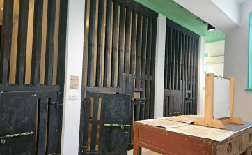
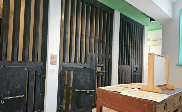

虎尾郡役所現為雲林布袋戲館。
1920年設郡，虎尾郡役所於大正11年創建，
1920年設郡，虎尾郡役所於大正11年創建， 又
於1931年陸續増建，形成今日所見的郡役所樣
貌，佔地七百餘坪，三合院格局，為一棟和洋
混合風格的磚木造廳舍。
主要由三個部份構成:
前棟主建築、內部庭院兩側的附屬建築。
兩部份共同形成一個ㄩ形的三合院格局，而第
三部份則為內庭中央一座獨立的二層樓閣，並
以廊道與前棟主建築物相連。
ABOUT YYPM
虎尾郡役所現為雲林布袋戲館。
1920年設郡，虎尾郡役所於大正11年創建，
1920年設郡，虎尾郡役所於大正11年創建， 又
於1931年陸續増建，形成今日所見的郡役所樣
貌，佔地七百餘坪，三合院格局，為一棟和洋
混合風格的磚木造廳舍。
主要由三個部份構成:
前棟主建築、內部庭院兩側的附屬建築。
兩部份共同形成一個ㄩ形的三合院格局，而第
三部份則為內庭中央一座獨立的二層樓閣，並
以廊道與前棟主建築物相連。
為二層樓、兩翼為一層，整個立面極為突出
高聳宏偉的醒目外型，為全台最美麗的郡役所
之一，還有小總督府的雅號。
1923年日本發生關東大地震後，對於建築物的
防震功能格外重視，1931年虎尾郡役所增建二
樓時，引進鋼樑設置在一、二樓樓層板間，以
便節省施作時間及增強建築物的強度。
庭院兩翼的簷廊，不同於前棟主體建築的磚砌
圓拱，為木柱樑作法。
簷廊介於室內與庭院的過渡空間，沿著建築邊
緣形成走廊，讓建築在下雨或日照時仍保持開
放，有通風、避雨的功能。
 

表面不同於主建築的清水紅磚，以洗石子處理
表面，窗戶非平衡錘式推拉窗，為左右橫拉
窗，為後續增建。
二樓內部牆壁為木摺漆喰壁。
為了讓灰泥更緊密的附著在牆壁或天花板上，
施工過程中，會添加纖維材質，並混入具有黏
著性質的材料。
為洋風建築構法之一，由日籍建築師引入日本
本土，而後建設台灣時，也引進了此工法。